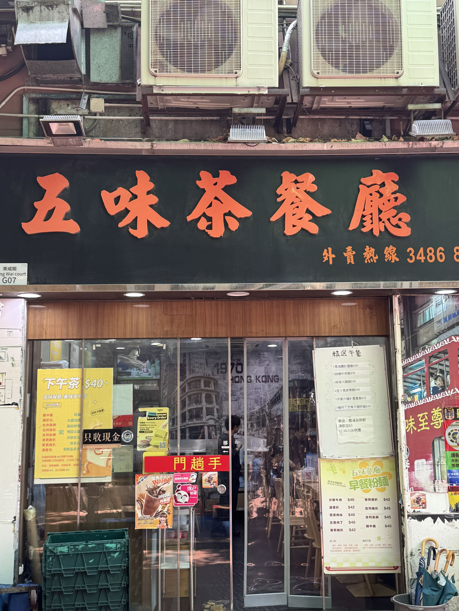
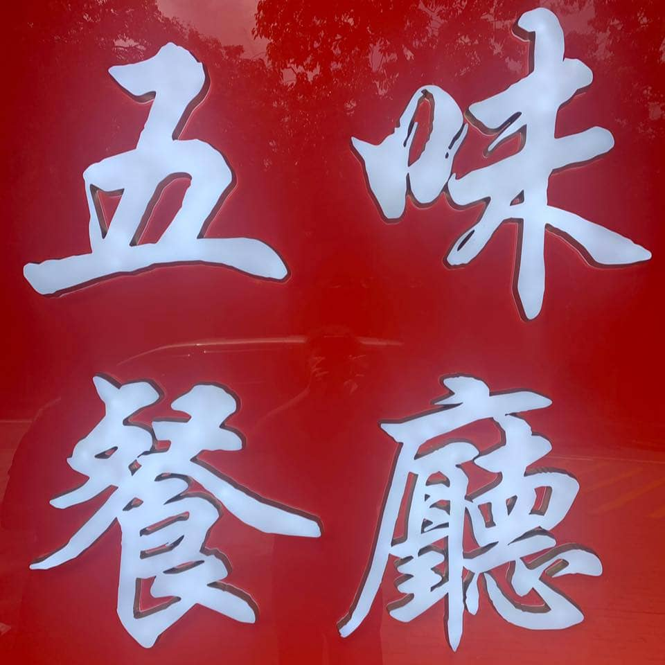

📖 五味百科
我們是一間位於屯門的港式茶餐廳，現時有兩間分店，只營業至下午，不設晚市。餐廳於2014年創立，當年在屯門紅橋開設第一家店——「五味茶餐廳」。及至2021年，我們在藍地開設了第二間分店，命名為「五味餐廳」。
其實，「五味餐廳」就是「五味茶餐廳」的分店。兩者並無分別，只是藍地店的招牌設計為正方形，名字上少了一個「茶」字而已。

紅橋店招牌

藍地店招牌
茶餐廳是香港的平民食堂，融合中西飲食文化。不同茶餐廳各有自己的招牌菜——常見的有蛋撻和菠蘿油。但在五味，我們不賣這些。我們的靈魂是吉列豬扒、香煎豬扒和沙爹牛肉麵。這裡出餐快、價錢親民，是街坊最愛。
🤝五個人 闖出來的港式味道
五味茶餐廳，不只是一間普通的茶餐廳。它的誕生，源自我們五個在廚房打拼的人的夢想。
所有的起點，是在另一間餐廳的廚房裡。那時候，我們在廚房工作了很多年，經常被師傅責罵、被人訓斥，確實很辛苦。恰巧大家都有興趣開一間屬於自己的餐廳。與其幫人賺錢，為什麼不為自己拼搏？
「五味」這個名字，正正對應著我們五個人——五種不同的味道。時光流逝，現在由我們兩位——蔡老闆及梁老闆——繼續守著這個招牌。但那份用心和堅持，從來沒有改變過。
（左）梁老闆，（右）蔡老闆
🫂由廚房到人心
「以前當學徒的日子，經常被師傅責罵，粗口爛舌，甚麼難聽的話都聽過。」
這句話，來自我們的親身經歷。正因為這段經歷，讓我們明白到不可以這樣對待別人，無論是員工還是客人。
我們秉持人性化的管理，對員工好一點，對客人真誠一點，互相尊重。從被責罵的學徒，到現在自己做老闆，我們領悟到：「現在不能用以前那種方式對人，不能像以前那樣激進。」